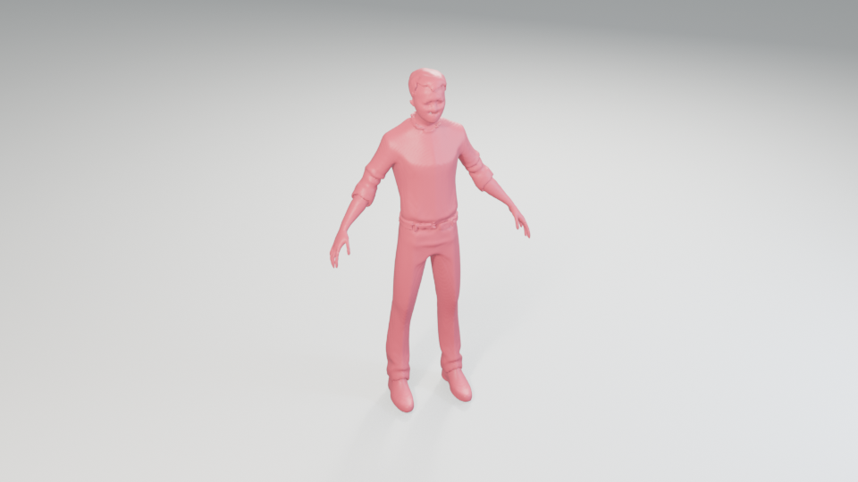

Partition
Divide the 1,024-token shape sequence into contiguous blocks.
1ZIP Lab, Zhejiang University · 2Monash University · 3University of Adelaide
†Equal contribution. *Corresponding authors.
Video
Abstract
While text-to-3D generation has advanced rapidly, achieving high geometric fidelity at low inference cost remains challenging. Existing methods either decode discrete shape tokens autoregressively or iteratively refine global 3D representations with diffusion or flow models. Autoregressive decoding is sequential and cannot revise errors, whereas diffusion and flow-matching models repeatedly process the full representation.
We propose Block3D, a block-wise diffusion framework that partitions the discrete shape-token sequence into contiguous blocks, generates the blocks autoregressively, and jointly denoises all tokens within the current block. Confidence-guided intra-block correction revises low-confidence tokens before each block is finalized. On a held-out set from TRELLIS-500K, Block3D reduces mean end-to-end generation time from 25.71 seconds to 4.99 seconds, achieving a 5.15× speedup over the fine-tuned autoregressive baseline without sacrificing geometric fidelity.
Interactive 3D Results
Nine higher-detail Block3D generations, rendered directly from the generated geometry.

A stylized knight character with a hexagonal helmet with a horizontal eye slit, rigid armor plates, a rectangular shield, and a sword arranged in a combat-ready pose.
Method
Block3D retains causal structure across blocks while enabling parallel, bidirectional denoising within each active block.
Divide the 1,024-token shape sequence into contiguous blocks.
Update every token in the active block jointly and in parallel.
Revise low-confidence tokens before committing the current block.
Pass the completed sequence through the frozen shape decoder.
More Results
Independently generated components are composed with shared lighting and cameras.
Citation
Please cite the arXiv preprint using the BibTeX entry.
@article{block3d2026,
title = {Block3D: Efficient Text-to-3D Generation
via Block-Wise Diffusion},
author = {Cui, Bowen and Wang, Weijie and Zhang, Zeyu and
He, Yefei and Lin, Mingda and Zhao, Haoyu and
He, Yuanyu and Chen, Donny Y. and Chen, Feng and
Zhuang, Bohan},
journal = {arXiv preprint arXiv:2608.19567},
year = {2026}
}